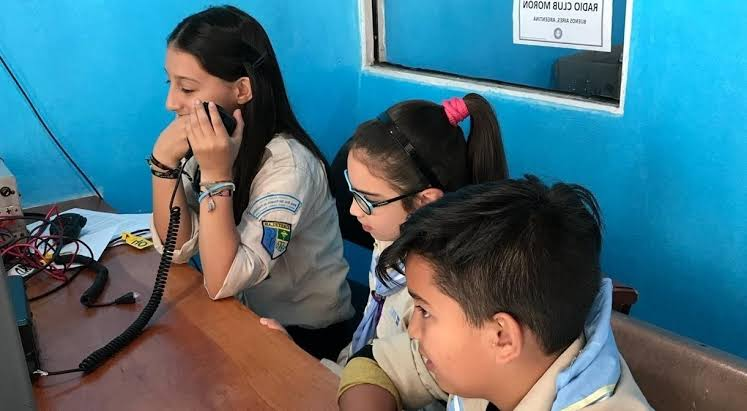
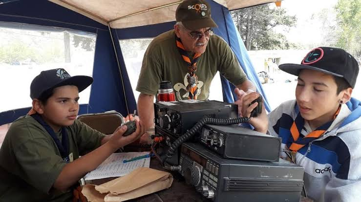

Cuando nuestros dirigentes nos contaron que en octubre íbamos a participar del JOTA-JOTI en La Plata, no me imaginaba todo lo que íbamos a poder hacer en un solo fin de semana. Nos juntamos más de 150 chicos de distintos grupos scouts de la región, cada uno con su pañuelo y muchísimas ganas de probar los equipos de radioaficionados y las computadoras que habían montado en el predio.
Con mi patrulla, los Halcones, pasamos primero por la carpa de radio. Nos explicaron cómo funciona el código Q, el alfabeto fonético internacional y cómo pedir turno para hablar sin pisar la frecuencia. Cuando me pasaron el micrófono por primera vez me puse un poco nervioso, pero enseguida nos respondió una unidad scout de Mendoza y después pudimos hacer contacto con chicos de Brasil y de España.

Además de las comunicaciones por aire e internet, armamos desafíos de cifrado de mensajes, juegos de pistas digitales y charlas sobre uso responsable de la tecnología. Volví a Berisso fascinado con el mundo de la radio y con la sensación increíble de saber que, al mismo tiempo que nosotros estábamos jugando acá, miles de scouts en todo el planeta estaban viviendo exactamente lo mismo.